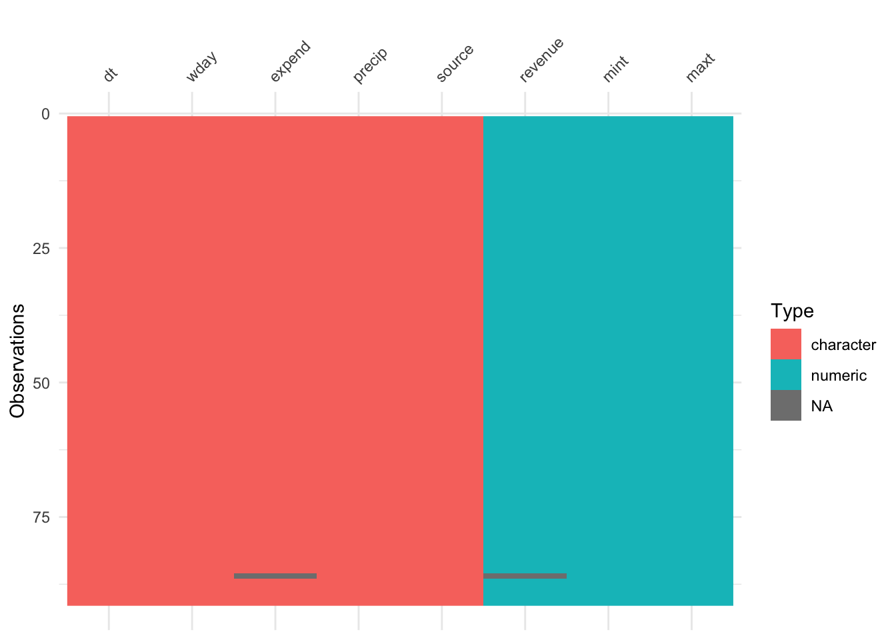
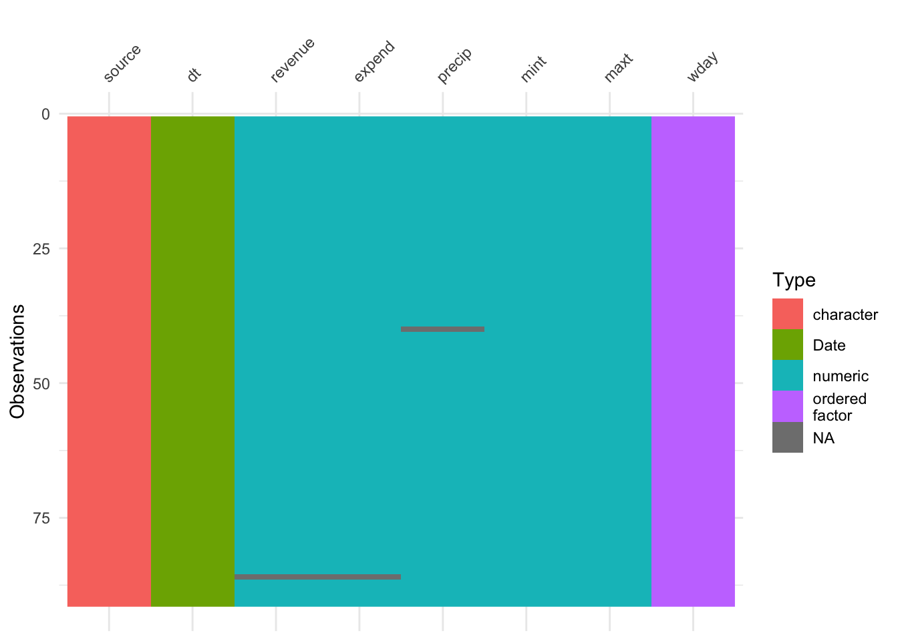
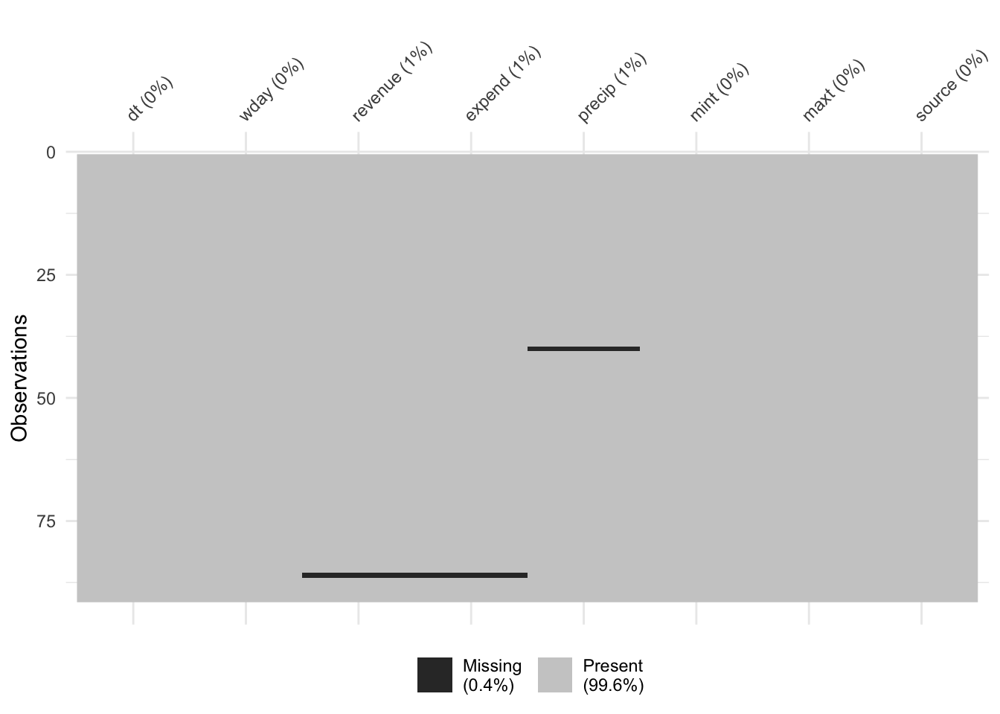
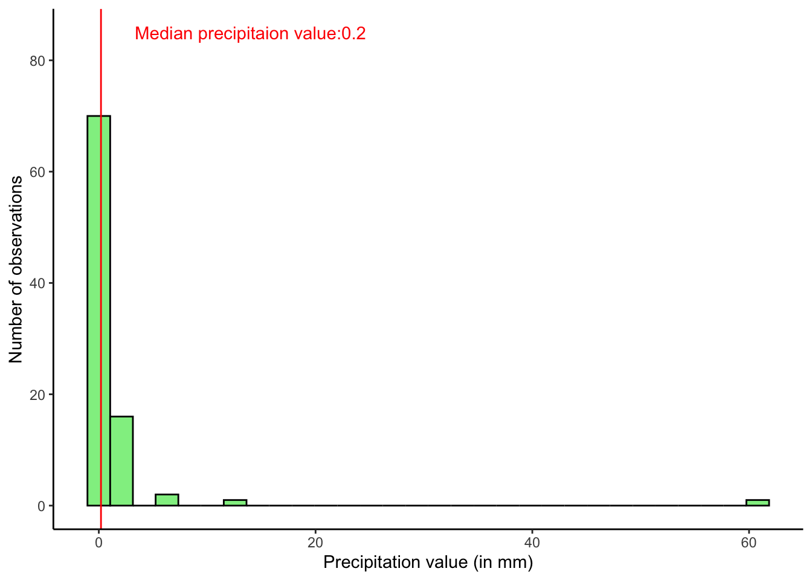
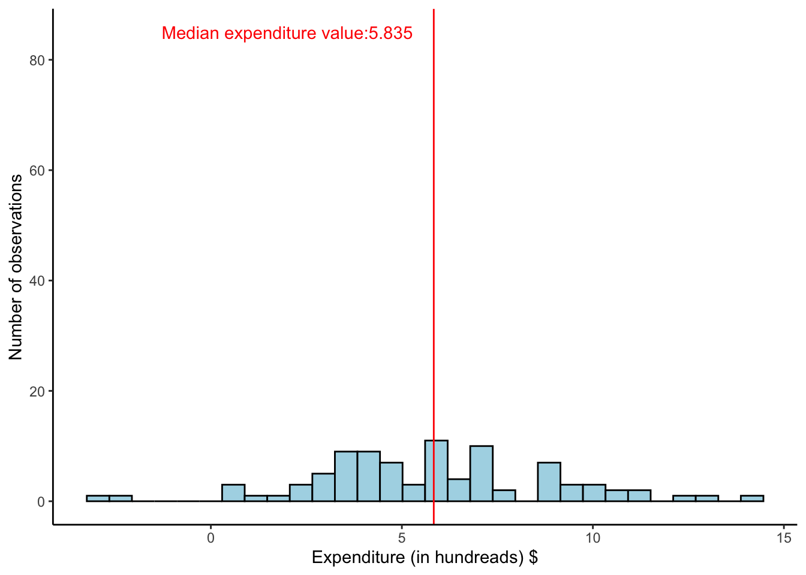
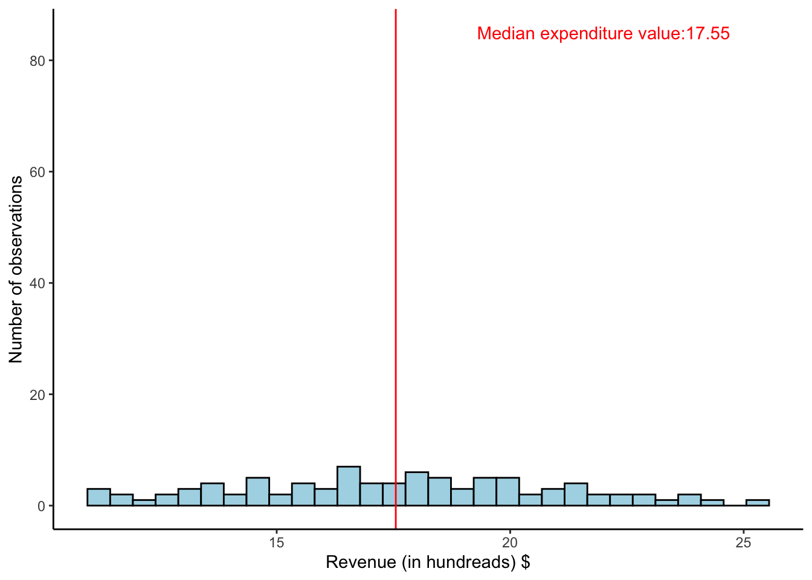

| var | description |
|---|---|
| dt | Date |
| wday | Day of the week |
| revenue | Daily revenue in hundreds, 11=1100 |
| expend | Daily expenses in hundreds |
| precip | Precipitation in mm |
| mint | Minimum temperature, Celsius |
| maxt | Maximum temperature, Celsius |
| source | Source of the weather data |
ETC 5521 Assignment 1 Q2

What are we trying to study ?
A small cafe in the city of Melbourne is interested in determining whether the daily earnings depend on the weather. They compiled data for a period over 2000-2001 to study this question. An initial data analysis for the dataset will be conducted in the following sections to prepare the dataset for further exploratory data
1 Data description
As a part of the initial data analysis, we need to describe the various variables present in the dataset. The variables are described in Table 1.
load("cafe.rda")- dt: Date of observation
- wday: The day of the week corresponding to the observation date.
- revenue: Revenue generated for the observation date.
- expend: Expenditures incurred for the observation date.
- precip: Precipitation value on the observation date.
- mint: Minimum temperature on the observation date.
- maxt: Maximum temperature on the observation date.
- source: Source of the weather data.
Let us get an understanding of how the data looks like by checking Table 2.
kbl(head(cafe), table.attr = 'data-quarto-disable-processing="true"') |>
kable_styling(full_width = FALSE) | dt | wday | revenue | expend | precip | mint | maxt | source |
|---|---|---|---|---|---|---|---|
| 12-16-00 | Sat | 10.97 | 7.21 | 0.4 | 16.4 | 23.00000 | BOSM |
| 12-17-00 | Sun | 12.13 | 6.01 | 0.6 | 14.6 | 21.00000 | BOSM |
| 12-18-00 | Mon | 11.27 | 0.64 | 0 | 18.0 | 18.77056 | NOAE |
| 12-19-00 | Tue | 14.33 | 4.06 | 0 | 15.4 | 29.23121 | NOAE |
| 12-20-00 | Wed | 15.61 | 3 | 0 | 16.6 | 25.81983 | NOAE |
| 12-21-00 | Thu | 18.37 | 2.63 | 0 | 14.6 | 32.74231 | NOAE |
2 Data screening
The second step in the initial data analysis would be to check for the datatypes associated with each variable. We can identify the datatypes through the glimpse function as shown below.
glimpse(cafe)Rows: 91
Columns: 8
$ dt <chr> "12-16-00", "12-17-00", "12-18-00", "12-19-00", "12-20-00", "1…
$ wday <chr> "Sat", "Sun", "Mon", "Tue", "Wed", "Thu", "Fri", "Sat", "Sun",…
$ revenue <dbl> 10.97, 12.13, 11.27, 14.33, 15.61, 18.37, 11.60, 12.58, 13.23,…
$ expend <chr> "7.21", "6.01", "0.64", "4.06", "3", "2.63", "0.6", "2.19", "6…
$ precip <chr> "0.4", "0.6", "0", "0", "0", "0", "7", "0", "0", "0", "0", "0"…
$ mint <dbl> 16.40000, 14.60000, 18.00000, 15.40000, 16.60000, 14.60000, 16…
$ maxt <dbl> 23.00000, 21.00000, 18.77056, 29.23121, 25.81983, 32.74231, 20…
$ source <chr> "BOSM", "BOSM", "NOAE", "NOAE", "NOAE", "NOAE", "NOAE", "BOSM"…Let us now try to visualise the datatypes using a visdat plot.
vis_dat(cafe)
Based on the glimpsed dataset and Figure 1,
⚠️‼️ We are able to observe the following issues with the datatypes of each variables:
- dt (Date) : The date variable is in the character format and will need to be converted to datetime format.
- expend (Expenditure) : The expenditure variable is in the character datatype while these are continuous numerical values. Hence, this variable will be converted to a numerical datatype.
- precip (Precipitation) : The precipitation variable which shows the precipitation value is a character variable while it contains continuous numerical values. Hence, this variable will be converted to a numerical variable.
Now that we have identified the variables with the incorrect datatypes, we will transform them into the required datatypes which will allow us to further analyse our dataset.
2.1 Converting date to datetime
In order to convert the dates into suitable format, we will need to conduct a quick sanity check. Let us first check the dates in its current form.
head(cafe$dt)[1] "12-16-00" "12-17-00" "12-18-00" "12-19-00" "12-20-00" "12-21-00"Based on the above output, we see that the dates are in the format of “MM-DD-YY”. Hence, an appropriate treatment to the dates will be done to convert them into the required datetime format as shown through the code chunk below.
cafe$dt <- mdy(cafe$dt)2.2 Obtaining day of week from date
While the column “wday” is already in its appropriate format and datatype, however, we will replace this column by obtaining the weekday from the date column. This would serve as an added validation and will prevent any incorrect entries of weekday in the dataset. Furthermore, the column will be converted into an ordered factor datatype which would allow for easier analysis and visualisations in later sections.
cafe$wday <- wday(cafe$dt,
label = TRUE)2.3 Converting expenditure and precipitation variables
The values of expenditures and precipitations should ideally be numerical in nature as they are continuous values. The following code chunk will convert the datatypes for these variables into a suitable datatype for numerical analysis.
cafe$precip <- as.numeric(cafe$precip)
cafe$expend <- as.numeric(cafe$expend)Let us now visualise the new datatypes using the visdat package once again as illustrated by Figure 2
vis_dat(cafe)
✅ Upon successful data screening, we now have a dataset with each variable being attributed with an appropriate datatype. ✅
3 Data cleaning
In this section, we will be mainly concerned with the quality of our data. Upon assessing the quality of the data, we will utilise various data cleaning methods to improve the overall usability of the dataset.
3.1 Missing values in the dataset
Let us try to visualise the presence of missing values in the dataset using the vis-miss visualisation.
vis_miss(cafe)
Based on illustration of Figure 3,
⚠️‼️
While the overall dataset is fairly clean, the missing values constitute about 0.4% of the entire dataset. These missing values are observed in the expenditure,precipitation and the revenue variables.
⚠️‼️
In the next part, we will observe how we can deal with the missing values in the dataset. Let us first visualise the distribution of the variables to get an understanding of a suitable method to either replace or remove the missing values in the dataset. This process is popularly termed as data imputation.
3.2 Data imputation
3.2.1 Precipitation
pl1 <- ggplot(data = cafe, aes(x = precip)) +
geom_histogram(fill = 'lightgreen', color = 'black') + geom_vline(xintercept = median(cafe$precip, na.rm = TRUE),
color = 'red') + theme_classic() + labs(x = "Precipitation value (in mm)", y = "Number of observations") + annotate("text", x = 14, y = 85, label = paste0("Median precipitaion value:",median(cafe$precip,na.rm = TRUE)),color='red')
pl1
Figure 4 illustrates the distribution of precipitation values. Upon analysing the data, we can observe that on most days, the precipitation values are low. The median value of precipitation amounted to 0.2 mm. Furthermore, median values are generally unaffected by the presence of outlier values.
Hence, replacing the missing values with the median values could be a safe assumption to make.
Let us imputate the missing values through the code chunk below.
cafe$precip <- cafe$precip %>% replace_na(median(cafe$precip,na.rm=TRUE))3.2.2 Expenditure
pl2 <- ggplot(data = cafe, aes(x = expend)) +
geom_histogram(fill = 'lightblue', color = 'black') + geom_vline(xintercept = median(cafe$expend, na.rm = TRUE),
color = 'red') + theme_classic() + labs(x = "Expenditure (in hundreads) $", y = "Number of observations") + annotate("text", x = 2, y = 85, label = paste0("Median expenditure value:",median(cafe$expend,na.rm = TRUE)),color='red')
pl2
Figure 5 illustrates a histogram of the distribution of the expenditure values. The median value of precipitation amounted to 583.5 $.
Let us imputate the missing expenditure values with the median values through the code chunk below.
cafe$expend <- cafe$expend %>% replace_na(median(cafe$expend,na.rm=TRUE))3.2.3 Revenue
pl3 <- ggplot(data = cafe, aes(x = revenue)) +
geom_histogram(fill = 'lightblue', color = 'black') + geom_vline(xintercept = median(cafe$revenue, na.rm = TRUE),
color = 'red') + theme_classic() + labs(x = "Revenue (in hundreads) $", y = "Number of observations") + annotate("text", x = 22, y = 85, label = paste0("Median expenditure value:",median(cafe$revenue,na.rm = TRUE)),color='red')
pl3
Figure 6 illustrates a histogram of the distribution of the revenue values. The median value of precipitation amounted to 1755 $.
Let us imputate the missing expenditure values with the median values through the code chunk below.
cafe$revenue <- cafe$revenue %>% replace_na(median(cafe$revenue,na.rm=TRUE))✅ We have successfully performed data imputation and removed all missing values by replacing them with median values of each variable. As a result, the data can be considered clean . ✅
4 Conclusion
What are our key takeaways ?
The following key steps were performed as a part of initial data analysis :
- Datatypes for each variable were assessed and visualised.
- Appropriate datatypes were assigned for date,expenditure and precipitation.
- The weekday variable was obtained from the date of observation using the lubridate package to prevent presence of any incorrect data entries.
- Data cleaning operations were conducted by checking for the presence of missing values.
- Based on the distribution of each variable, data imputation was conducted to treat the missing values.
5 Resources
The above analysis was undertaken with the help of the following software and packages:
- RStudio: Integrated Development for R. RStudio, PBC, Boston, MA URL http://www.rstudio.com/.
- ggplot2: H. Wickham. ggplot2: Elegant Graphics for Data Analysis. Springer-Verlag New York, 2016.
- tidyverse: Wickham H, Averick M, Bryan J, Chang W, McGowan LD, François R, Grolemund G, Hayes A, Henry L, Hester J, Kuhn M, Pedersen TL, Miller E, Bache SM, Müller K, Ooms J, Robinson D, Seidel DP, Spinu V, Takahashi K, Vaughan D, Wilke C, Woo K, Yutani H (2019). “Welcome to the tidyverse.” Journal of Open Source Software, 4(43), 1686. doi:10.21105/joss.01686 https://doi.org/10.21105/joss.01686.
- knitr: Yihui Xie (2014) knitr: A Comprehensive Tool for Reproducible Research in R. In Victoria Stodden, Friedrich Leisch and Roger D. Peng, editors, Implementing Reproducible Computational Research. Chapman and Hall/CRC. ISBN 978-1466561595.
- rmarkdown: Allaire J, Xie Y, Dervieux C, McPherson J, Luraschi J, Ushey K, Atkins A, Wickham H, Cheng J, Chang W, Iannone R (2023). rmarkdown: Dynamic Documents for R. R package version 2.23, https://github.com/rstudio/rmarkdown.
- kableExtra: Zhu H (2023). kableExtra: Construct Complex Table with ‘kable’ and Pipe Syntax. http://haozhu233.github.io/kableExtra